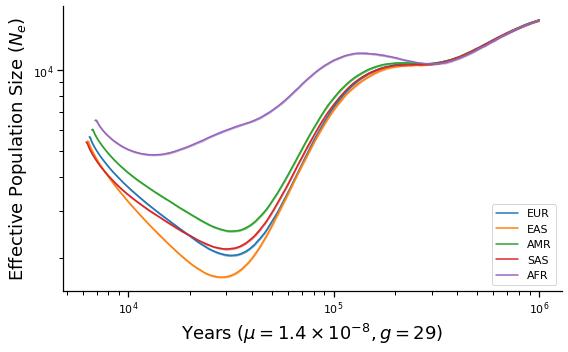

1000 Genomes analysis¶
The tree sequence files for 1kg are available here. The other metadata files are part of the public 1kg release.
[2]:
import os
import tskit
import numpy as np
import xsmc
import matplotlib.pyplot as plt
from concurrent.futures import ThreadPoolExecutor, as_completed, ProcessPoolExecutor
from xsmc.supporting.kde_ne import kde_ne
from xsmc.supporting.plotting import *
import logging
import os
logging.getLogger("xsmc").setLevel(logging.INFO)
PAPER_ROOT = os.path.expanduser(os.environ.get("PAPER_ROOT", "."))
[3]:
np.random.seed(1)
def seed():
return np.random.randint(1, np.iinfo(np.int32).max)
[4]:
full_chroms = [tskit.load(f"/scratch/1kg/trees/1kg_chr{i}.trees") for i in range(1, 23)]
# chr1 = chr1.delete_intervals([[0, 16e6]], simplify=False).trim()
Accessibility masking¶
The 1kg tree sequences feature some trees that span huge intervals. These represent centromeres, telomeres, or other inaccessible regions. To our method they appear as huge tracts of IBD, leading to downward bias in the size history estimates. To properly correct for this we should use the 1kg accessibility masks, but here I adopt the simpler approach of heuristically chopping out trees that span large segments (>1Mb).
[5]:
long_spans = {}
for i, chrom in enumerate(full_chroms, 1):
long_spans[i] = [t.interval for t in chrom.trees() if np.diff(t.interval) > 1e6]
long_spans
[5]:
{1: [Interval(left=121347335.0, right=142643153.0)],
2: [Interval(left=90490322.0, right=91634056.0),
Interval(left=92102205.0, right=95333904.0)],
3: [Interval(left=90291128.0, right=93527692.0)],
4: [Interval(left=49629442.0, right=52700457.0)],
5: [Interval(left=46118241.0, right=49571959.0)],
6: [Interval(left=58665913.0, right=61967504.0)],
7: [Interval(left=57669630.0, right=62465883.0)],
8: [Interval(left=43529404.0, right=47458633.0)],
9: [Interval(left=47309856.0, right=65510886.0)],
10: [Interval(left=39043557.0, right=42746452.0)],
11: [Interval(left=50381334.0, right=51436554.0),
Interval(left=51510699.0, right=55254669.0)],
12: [Interval(left=34340941.0, right=38610698.0)],
13: [Interval(left=0.0, right=19037838.0)],
14: [Interval(left=0.0, right=19083007.0)],
15: [Interval(left=0.0, right=20253797.0)],
16: [Interval(left=35146682.0, right=46554124.0)],
17: [Interval(left=22155426.0, right=25392232.0)],
18: [Interval(left=15357425.0, right=18535477.0)],
19: [Interval(left=24310556.0, right=28366182.0)],
20: [Interval(left=26193540.0, right=29862565.0)],
21: [Interval(left=0.0, right=9491942.0),
Interval(left=11010799.0, right=14383028.0)],
22: [Interval(left=0.0, right=16103536.0)]}
Now we simply chop these intervals out. This technically allows IBD tracts to span these gaps during inference, but the effect should be minimal.
[6]:
chroms = [
chrom.delete_intervals(long_spans[i], simplify=False).trim()
for i, chrom in enumerate(full_chroms, 1)
]
[7]:
# 1kg metadata
with open("/scratch/1kg/integrated_call_samples_v3.20130502.ALL.panel", "rt") as f:
next(f)
rows = (line.strip().split("\t") for line in f)
sample_map = {sample_id: (pop, superpop) for sample_id, pop, superpop, _ in rows}
[8]:
# map each 1kg sample id ts nodes
import json
samples_to_nodes = {
json.loads(ind.metadata)["individual_id"]: ind.nodes
for ind in chroms[0].individuals()
}
[9]:
superpops = {}
for sample_id, (p, sp) in sample_map.items():
superpops.setdefault(sp, [])
superpops[sp].append(sample_id)
[10]:
K = 20 # number of samples to take from each superpopulation
mu = 1.4e-8 # assumed mutation rate for humans
def process_samples(sample_dict, w, rho_over_theta):
sampled_heights = {}
lines = {}
for sp in sample_dict:
print(sp, flush=True)
xs = []
for sample_id in sample_dict[sp][:K]:
print("\t%s" % sample_id)
f, p = samples_to_nodes[sample_id]
for data in chroms:
xs.append(
xsmc.XSMC(
data, focal=f, panel=[p], w=w, rho_over_theta=rho_over_theta
)
)
with ThreadPoolExecutor(24) as p:
futs = [
p.submit(
x.sample_heights,
j=100,
k=int(x.ts.get_sequence_length() / 50_000),
seed=seed(),
)
for x in xs
]
sampled_heights[sp] = np.concatenate(
[f.result() * 2 * x.theta / (4 * mu) for f, x in zip(futs, xs)], axis=1
) # rescale each sampled path by 2N0 so that segment heights are in generations
return sampled_heights
Time to process 1 whole genome¶
[11]:
%%time
_ = process_samples({'test': ['NA12878']}, w=500, rho_over_theta=1.)
test
NA12878
CPU times: user 7min 36s, sys: 743 ms, total: 7min 37s
Wall time: 37.8 s
Main event¶
Run pipeline for all 1kg samples split into 5 superpopulations
[12]:
def make_plot(sampled_heights, g, name):
fig, ax = plt.subplots(figsize=(8, 5))
x0 = np.geomspace(1e2, 1e6, 1000)
for sp, col in zip(sampled_heights, TABLEAU):
lines = []
A = np.array(sampled_heights[sp])
with ProcessPoolExecutor() as p:
futs = [p.submit(kde_ne, a.reshape(-1)) for a in A]
for f in as_completed(futs):
x, y = f.result()
lines.append((x * g, y / 2)) # rescale to years, plot diploid Ne
plot_summary(ax, lines, x0, color=col, label=sp)
ax.set_xscale("log")
ax.set_yscale("log")
ax.legend(loc="lower right")
ax.set_xlabel(r"Years ($\mu=1.4\times 10^{-8}, g=%d$)" % g)
ax.set_ylabel("Effective Population Size ($N_e$)")
fig.tight_layout()
fig.savefig(os.path.join(PAPER_ROOT, "figures", "xsmc_1kg_%s.pdf" % name))
return fig
[13]:
%%time
sampled_heights = process_samples(superpops, w=500, rho_over_theta=1.)
EUR
HG00096
HG00097
HG00099
HG00100
HG00101
HG00102
HG00103
HG00105
HG00106
HG00107
HG00108
HG00109
HG00110
HG00111
HG00112
HG00113
HG00114
HG00115
HG00116
HG00117
EAS
HG00403
HG00404
HG00406
HG00407
HG00409
HG00410
HG00419
HG00421
HG00422
HG00428
HG00436
HG00437
HG00442
HG00443
HG00445
HG00446
HG00448
HG00449
HG00451
HG00452
AMR
HG00551
HG00553
HG00554
HG00637
HG00638
HG00640
HG00641
HG00731
HG00732
HG00734
HG00736
HG00737
HG00739
HG00740
HG00742
HG00743
HG01047
HG01048
HG01049
HG01051
SAS
HG01583
HG01586
HG01589
HG01593
HG02490
HG02491
HG02493
HG02494
HG02597
HG02600
HG02601
HG02603
HG02604
HG02648
HG02649
HG02651
HG02652
HG02654
HG02655
HG02657
AFR
HG01879
HG01880
HG01882
HG01883
HG01885
HG01886
HG01889
HG01890
HG01894
HG01896
HG01912
HG01914
HG01915
HG01956
HG01958
HG01985
HG01986
HG01988
HG01989
HG01990
CPU times: user 15h 50min 50s, sys: 32.1 s, total: 15h 51min 22s
Wall time: 41min 10s
[14]:
make_plot(sampled_heights, 29, "final")
/home/terhorst/opt/py37/lib/python3.7/site-packages/numpy/lib/nanfunctions.py:1392: RuntimeWarning: All-NaN slice encountered
overwrite_input, interpolation)
2020-09-21 16:03:00,023 WARNING matplotlib.font_manager MainThread findfont: Font family ['sans-serif'] not found. Falling back to DejaVu Sans.
2020-09-21 16:03:00,225 WARNING matplotlib.font_manager MainThread findfont: Font family ['sans-serif'] not found. Falling back to DejaVu Sans.
[14]:

